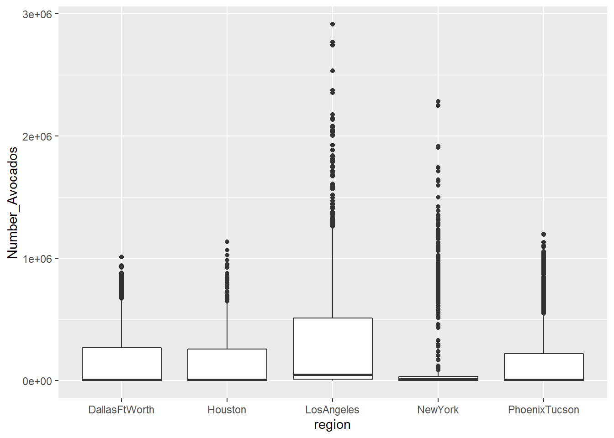
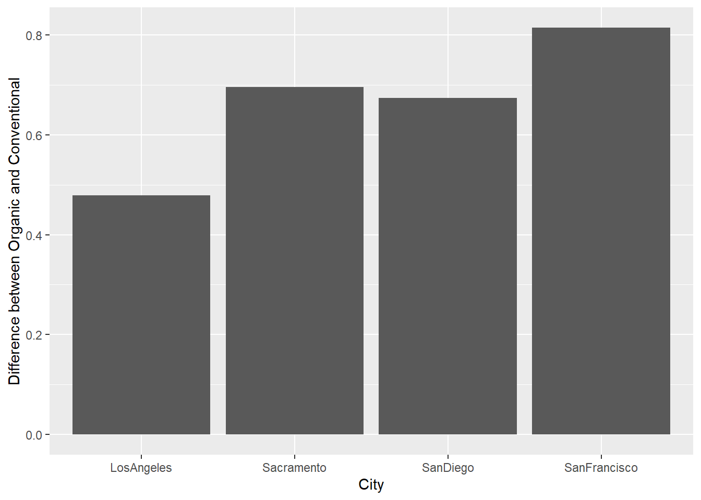
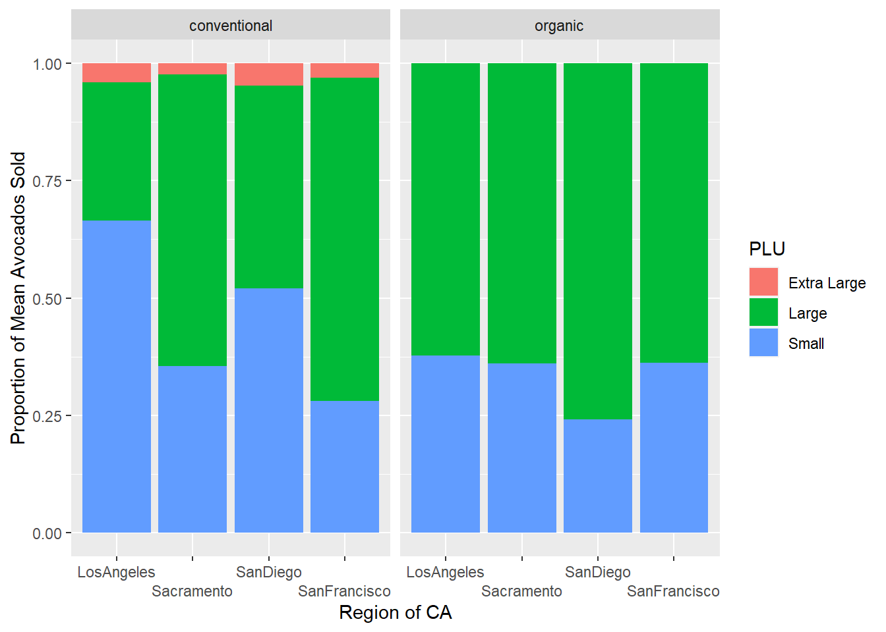

library(tidyverse)Lab 4
Import Libraries
Read in Data
This data includes information on retail information including volume and cost on avocados from multi-outlet sources.
avocado <- read_csv(here :: here('Week 4','avocado.csv'),col_type=cols())New names:
• `` -> `...1`Data Cleaning
Region has four different naming conventions. These include Total United States, State, City, and Region
region <- c('GreatLakes', 'Midsouth', 'Northeast',
'Plains', 'SouthCentral', 'Southeast',
'West')
df_major_regions <- data.frame(region)
region <- c('California', 'SouthCarolina')
df_major_states <- data.frame(region)
region <- c('TotalUS')
df_total_us <- data.frame(region)
region_avocado <- avocado |>
semi_join(df_major_regions)Joining, by = "region"city_avocado <- avocado |>
anti_join(df_major_regions) |>
anti_join(df_major_states) |>
anti_join(df_total_us)Joining, by = "region"
Joining, by = "region"
Joining, by = "region"Exercises
type <- c('organic')
df_organic_small = data.frame(type)
region_avocado |>
semi_join(df_organic_small) |>
group_by(region) |>
summarize_at(.cols = '4225', .funs = sum)`.cols` has been renamed and is deprecated, please use `.vars`
Joining, by = "type"# A tibble: 7 × 2
region `4225`
<chr> <dbl>
1 GreatLakes 10703094.
2 Midsouth 6973186.
3 Northeast 6107477.
4 Plains 3062592.
5 SouthCentral 1015681.
6 Southeast 2212015.
7 West 11101894.It appears that the west region sold the most organic small hess avocados.
4.
avocado |>
pivot_longer(cols = `4046`:`4770`, names_to = 'PLU', values_to = 'Number_Avocados') |>
separate(col=Date, into=c('year', 'month', 'day'), sep='-') |>
group_by(month) |>
summarize_at(.cols = 'Number_Avocados', .funs = sum)`.cols` has been renamed and is deprecated, please use `.vars`# A tibble: 12 × 2
month Number_Avocados
<chr> <dbl>
1 01 1261404532.
2 02 1267706034.
3 03 1147213190.
4 04 887769826.
5 05 1081086092.
6 06 864561606.
7 07 924561382.
8 08 831999598.
9 09 715001988.
10 10 732454233.
11 11 683302179.
12 12 753128139.February seems to have the most avocados sold than any other month.
5.
top_cities <- city_avocado |>
pivot_longer(cols = `4046`:`4770`, names_to = 'PLU', values_to = 'Number_Avocados') |>
group_by(region) |>
summarize_at(.cols = 'Number_Avocados', .funs = sum) |>
arrange(desc(Number_Avocados)) |>
head(n = 5)`.cols` has been renamed and is deprecated, please use `.vars`avocado |>
semi_join(top_cities) |>
pivot_longer(cols = `4046`:`4770`, names_to = 'PLU', values_to = 'Number_Avocados') |>
ggplot(mapping = aes(y = Number_Avocados, x = region)) +
geom_boxplot()Joining, by = "region"
6.
region <- c('LosAngeles', 'SanDiego', 'Sacramento', 'SanFrancisco')
df_california <- data.frame(region)
avocado_california <- avocado |>
semi_join(df_california) Joining, by = "region"avocado_california_difference <- avocado_california |>
pivot_longer(cols = `4046`:`4770`, names_to = 'PLU', values_to = 'Number_Avocados') |>
group_by(region, type) |>
summarise_at(.cols = 'AveragePrice', .funs = mean) |>
pivot_wider(names_from = type, values_from = AveragePrice) |>
mutate(difference = organic - conventional)`.cols` has been renamed and is deprecated, please use `.vars`avocado_california_difference# A tibble: 4 × 4
# Groups: region [4]
region conventional organic difference
<chr> <dbl> <dbl> <dbl>
1 LosAngeles 0.976 1.46 0.479
2 Sacramento 1.27 1.97 0.695
3 SanDiego 1.06 1.73 0.673
4 SanFrancisco 1.40 2.21 0.814avocado_california_difference |>
ggplot(mapping = aes(x = region, y = difference)) +
geom_bar(stat = "identity")+
ylab('Difference between Organic and Conventional') +
xlab('City')
It seems like the city with the biggest difference between conventional and organic mean price in avocados for the cities, San Diego, Los Angeles, Sacramento and San Francisco is San Francisco.
7.
avocado_sales_per_PLU_type_region <- avocado_california |>
pivot_longer(cols = `4046`:`4770`, names_to = 'PLU', values_to = 'Number_Avocados') |>
group_by(type, PLU, region) |>
summarise_at(.cols = 'Number_Avocados', .funs = sum) `.cols` has been renamed and is deprecated, please use `.vars`avocado_sales_per_region <- avocado_california |>
pivot_longer(cols = `4046`:`4770`, names_to = 'PLU', values_to = 'Number_Avocados') |>
group_by(type, region) |>
summarise_at(.cols = 'Number_Avocados', .funs = sum) |>
rename('Total_Avocados' = 'Number_Avocados')`.cols` has been renamed and is deprecated, please use `.vars`avocado_sales_per_PLU_type_region |>
left_join(avocado_sales_per_region) |>
mutate(PLU = recode(PLU, `4046` = 'Small', `4225` = 'Large', `4770` = 'Extra Large' )) |>
mutate(mean_percentage = Number_Avocados / Total_Avocados) |>
ggplot(aes(x = region, y=mean_percentage, fill=PLU)) +
facet_wrap(~type) +
geom_col(stat="identity") +
scale_x_discrete(guide = guide_axis(n.dodge=2)) +
xlab('Region of CA') +
ylab('Proportion of Mean Avocados Sold')Joining, by = c("type", "region")Warning: Ignoring unknown parameters: stat